The Writer's Toolkit (instructions)
(The Writer's Toolkit is here)
The Writer's Toolkit gathers and displays two different types of information: information regarding the narrative point of view (in regard to first, second or third person) and emotional word content. The narrative point of view is classified by pronoun use. The emotional word analysis was built using Mohammad Saif's crowdsourced emotion lexicon. The tool generates interactive line graphs, directing users to specific emotional words or pronouns in their text with the click of a button. Input texts are put in the input text box, and javascript partitions its string representation based on sections determined by the user. A loop is run over each section to gather information corresponding to either the narrative point of view or the emotional content of the word. The data collected is displayed as an interactive line graph showing the number of emotional or narrative words in each section over the entire text.
NB: Unfortunately, the emotion graph generator does not function in Internet Explorer. Download a separate browser, such as Mozilla Firefox, Google Chrome, or Safari, to run the tool. I wrote and tested this tool in Firefox.
Instructions: (or a tutorial video here)
1. Place text into the input text box and select the emotions you'd like to view.
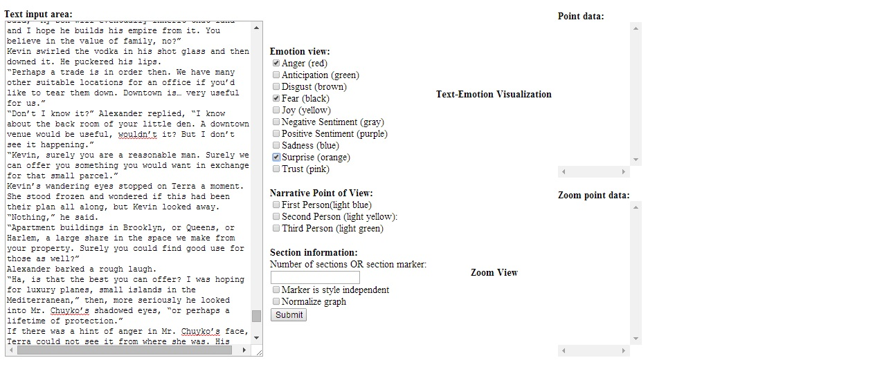
2. Create a section marker and place it in the section marker box. A section marker can either be a number of sections (for example, "8" for 8 equal length text sections), or a word (such as "Chapter," or "Episode" or "pizza" to make a new data point each time that word appears). Push submit, and a graph will appear!
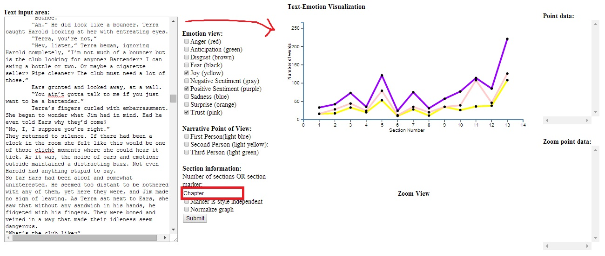
3. Click on dots on the graph to open up more interactive features: the section of text corresponding to the clicked dot will be highlighted, a zoomed graph of that section will appear below, and the specific emotional words in that section will appear on the right.
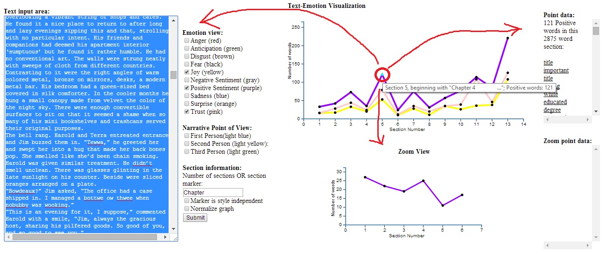
4. The zoomed graph is especially useful for long texts with large sections. Each dot on the zoomed graph corresponds to a 500 word subsection of the main section. Clicking on a dot in the zoomed graph highlights that 500 word subsection, and creates a list of emotional words in that subsection to the right.
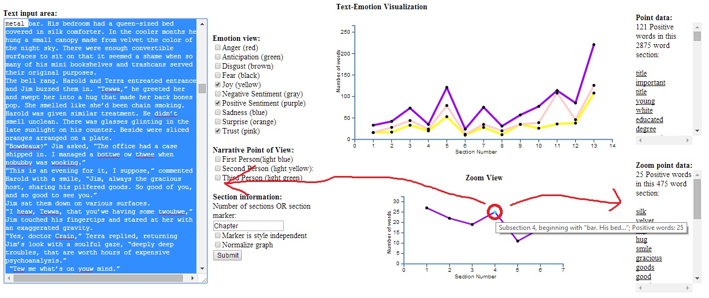
5. Clicking on an emotional word in the point data or zoom data boxes will highlight the location of that word in the text.
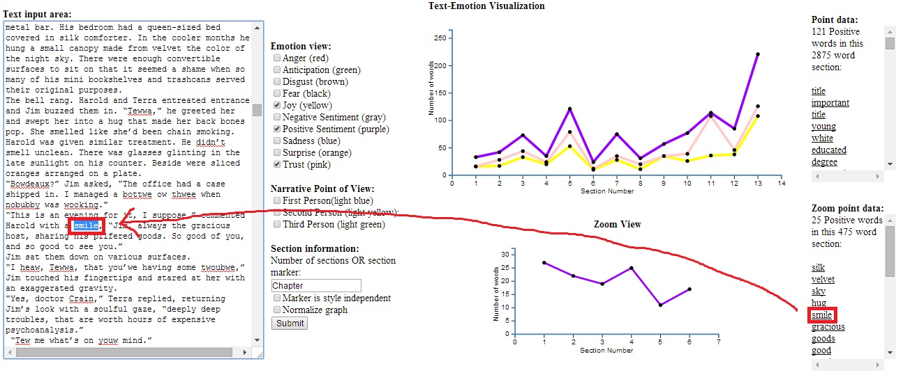
Extra 1: Checking "Marker is style independent" will create a new section whenever any form of the word is found regardless of punctuation and capitalisation (e.g. if "Chapter" is made the section marker, and "marker is style independent" is ticked, "chapter," "CHAPTER!!" "chaPter?" will all generate a new dot. Conversely, if "marker is style independent" is not ticked, only the exact form of "Chapter" will generate a new dot, "chapter" "CHAPTER!!" and "chaPter?" will not).
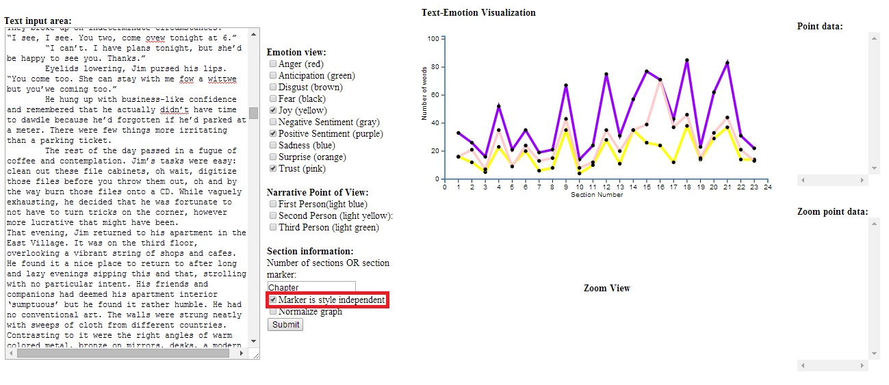
Extra 2: Checking "Normalize graph" will normalize the emotional readings across sections based on word count, if sections are of unequal length (e.g. if there's an 8000 word chapter, and a 1000 word chapter, it may look like there's an emotional peak at the 8000 word chapter when in reality there are just more words in the section. Normalization will "shrink" the 8000 word chapter so it will display proportionally to the 1000 word chapter).
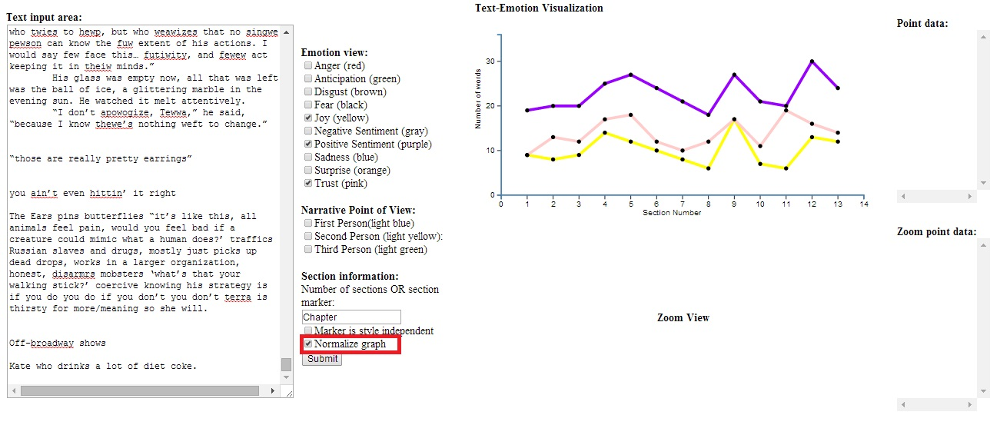
NB: Unfortunately, the emotion graph generator does not function in Internet Explorer. Download a separate browser, such as Mozilla Firefox, Google Chrome, or Safari, to run the tool. I wrote and tested this tool in Firefox.
Instructions: (or a tutorial video here)
1. Place text into the input text box and select the emotions you'd like to view.
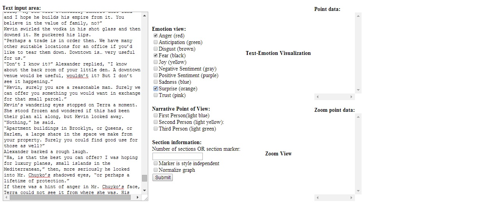
2. Create a section marker and place it in the section marker box. A section marker can either be a number of sections (for example, "8" for 8 equal length text sections), or a word (such as "Chapter," or "Episode" or "pizza" to make a new data point each time that word appears). Push submit, and a graph will appear!
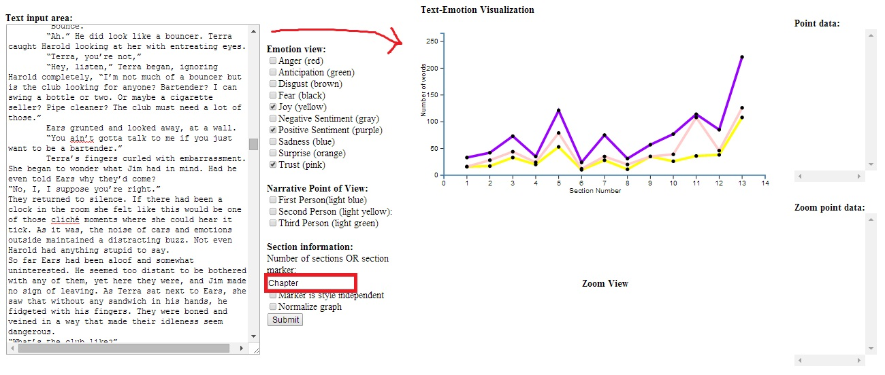
3. Click on dots on the graph to open up more interactive features: the section of text corresponding to the clicked dot will be highlighted, a zoomed graph of that section will appear below, and the specific emotional words in that section will appear on the right.
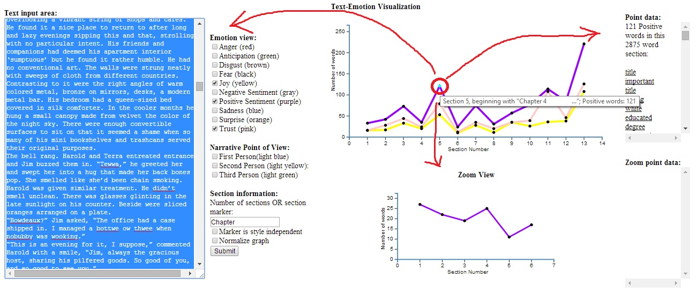
4. The zoomed graph is especially useful for long texts with large sections. Each dot on the zoomed graph corresponds to a 500 word subsection of the main section. Clicking on a dot in the zoomed graph highlights that 500 word subsection, and creates a list of emotional words in that subsection to the right.
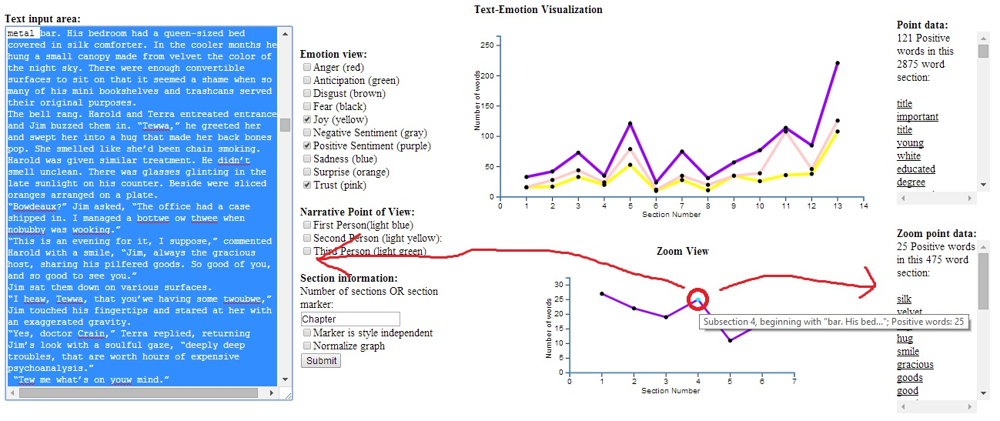
5. Clicking on an emotional word in the point data or zoom data boxes will highlight the location of that word in the text.
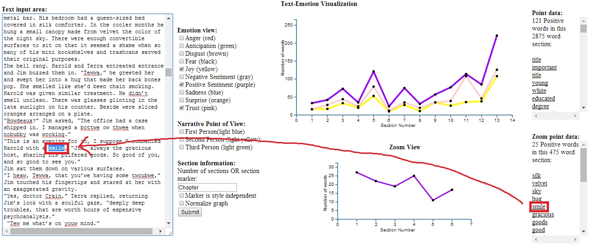
Extra 1: Checking "Marker is style independent" will create a new section whenever any form of the word is found regardless of punctuation and capitalisation (e.g. if "Chapter" is made the section marker, and "marker is style independent" is ticked, "chapter," "CHAPTER!!" "chaPter?" will all generate a new dot. Conversely, if "marker is style independent" is not ticked, only the exact form of "Chapter" will generate a new dot, "chapter" "CHAPTER!!" and "chaPter?" will not).
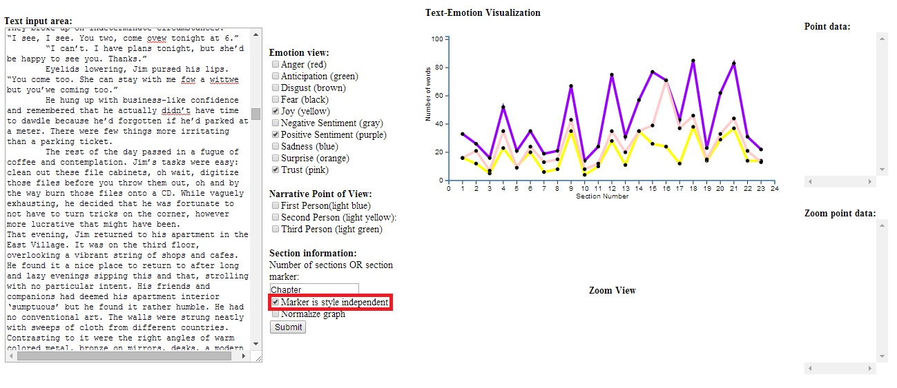
Extra 2: Checking "Normalize graph" will normalize the emotional readings across sections based on word count, if sections are of unequal length (e.g. if there's an 8000 word chapter, and a 1000 word chapter, it may look like there's an emotional peak at the 8000 word chapter when in reality there are just more words in the section. Normalization will "shrink" the 8000 word chapter so it will display proportionally to the 1000 word chapter).
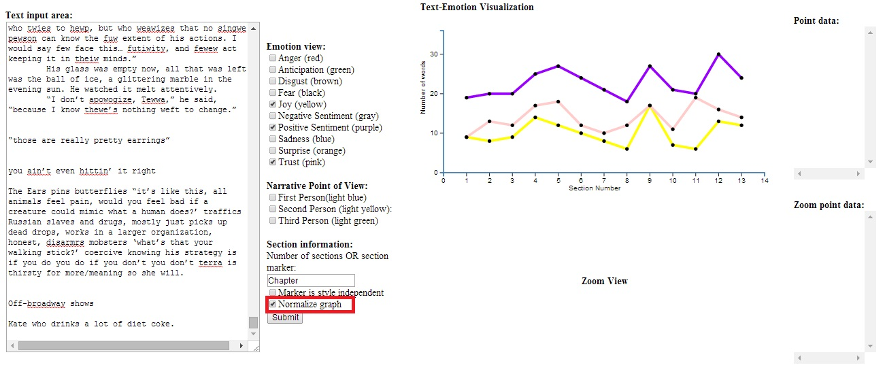